어둡고 자극적인 웹툰 추천 TOP 30
자극적인, 다크판타지, 시리어스, 악역이주인공, 고자극드라마 같은 태그가 붙은 작품을 모았어요. 네이버웹툰·카카오웹툰·레진코믹스에서 조건에 맞는 작품 298개 중 인기 순으로 30개를 골랐어요. 인기 TOP 3: 외모지상주의, 참교육, 악역의 엔딩은 죽음뿐
2026-10-03 기준 · 성인 작품 제외
내 취향으로 더 좁혀서 추천받기 →-
1네이버웹툰
외모지상주의
못생기고 뚱뚱하다고 괴롭힘을 당하며 루저 인생만 살아온 내가 잘생겨졌다는 이유로 인싸가 됐다. 어느 날 자고 일어났더니 갑자기 완벽한 외모와 몸을 지닌 사람이 되어 깨어난다면?
복수극사이다학원액션소년물참교육네이버웹툰에서 보기 → -
2네이버웹툰
참교육
무너진 교권을 지키기 위해 교권보호국 소속 나화진의 참교육이 시작된다! <부활남> 채용택 작가 X <신석기녀> 한가람 작가의 신작!
자극적인사이다학원액션사회고발참교육네이버웹툰에서 보기 → -
3
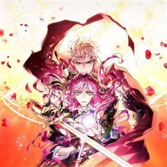
카카오웹툰악역의 엔딩은 죽음뿐
역하렘 공략 게임의 악역, 에카르트 공작가의 하나뿐인 공녀이자 입양아 페넬로페로 빙의했다. 그런데 하필 난이도는 극악! 뭘 해도 엔딩은 죽음뿐! ‘진짜 공녀’가 나타나기 전에 여주의 어장 중 한 명을 공략해서 살아남아야 한다. 사사건건 시비를 거는 오빠 1, 2. 모든 루트가 죽음으로…
자극적인서스펜스로판빙의카카오웹툰에서 보기 → -
4
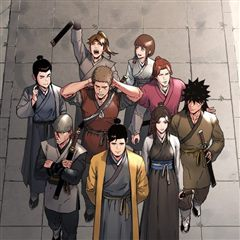
카카오웹툰군림천하
"너만은 꼭 군림천하 해야 한다!” 그 한마디로 진산월의 운명이 결정됐다. 스물세 살, 그는 종남파의 장문인이 되었다. 남은 이들은 단 8명의 제자뿐. 한때 천하제일을 꿈꿨지만, 지금은 명맥만을 잇는 문파. 사부의 유지를 위해, 살아남기 위해— 진산월은 비정한 강호로 나아간다.
자극적인성장물액션카카오웹툰에서 보기 → -
5
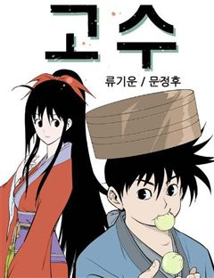
-
6
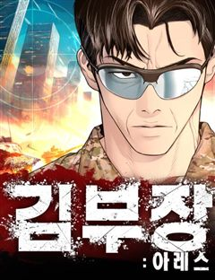
네이버웹툰김부장
“제발 안경 쓴 아저씨는 건들지 말자…” 오직 자신의 딸 '민지'를 위해 특수요원직을 관두고 평범함을 선택한 가장 김부장. 그러던 어느 날 민지가 소리소문 없이 사라지고, 김부장은 자신을 감시하는 국가를 적으로 돌리면서까지 딸을 찾아나서기 시작하는데... [외모지상주의], [싸움독학]…
자극적인시리어스사이다가족중년네이버웹툰에서 보기 → -
7
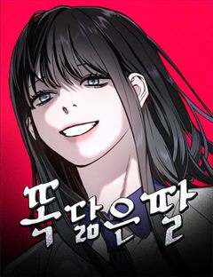
네이버웹툰똑 닮은 딸
'우리 엄마가 살인마인 것 같다.' 성적 우수, 품행 단정, 모범적인 자식인 길소명은 엄마가 요구하는 기준에 맞춰 완벽한 딸로 살아왔다. 그러나 남동생이 강물에서 시체로 떠오른 그 날, 소명의 머릿속엔 섬뜩한 의혹이 피어오른다. 자식의 인생에 방해되는 모든 것을 없애려는 엄마와 그녀에…
자극적인시리어스고자극드라마입시명작네이버웹툰에서 보기 → -
8
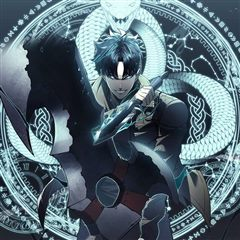
카카오웹툰재앙급 영웅님이 귀환하셨다
지상에 최강의 영웅이 있었다. “하지만 죽었잖아. 우리가 죽인 놈이 어떻게 돌아와?” “그러게. 돌아올 수 있으면 한번 돌아와 보라지.” 그런데 20년 만에 진짜 돌아와 버렸다? “뭘 그리 놀래? 왜. 양심에 찔릴 짓이라도 하셨나?” 이 XX들. 가만 안 둔다.
복수극사이다학원물카카오웹툰에서 보기 → -
9네이버웹툰
사신소년
수명을 대가로 죽은 자의 능력을 빌리는 소년! 화려한 액션에서 부터 스포츠, 두뇌 플레이까지 한계는 없다!
다크판타지액션판타지학원액션현대동양네이버웹툰에서 보기 → -
10
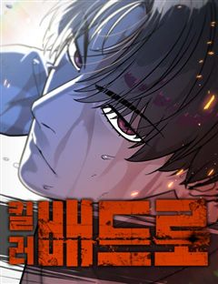
-
11
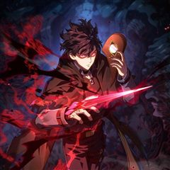
카카오웹툰철혈검가 사냥개의 회귀
바스커빌 가문의 사냥개 '비키르'. 사냥개로서 가문에 충성한 보답은 모함과 누명으로 얼룩진 단두대의 칼날이었다. "다시는 토끼를 잡고 나면 삶아지는 사냥개처럼 살지 않겠노라." 그런 그에게 죽음 대신 찾아온 뜻밖의 기회. 어둠 속에서 송곳니를 갈고닦는 비키르의 눈이 붉게 빛났다. "기…
복수극학원물카카오웹툰에서 보기 → -
12
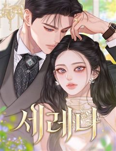
네이버웹툰세레나
왕국에서 가장 화려했던 나의 가문이 망했다. 할머니가 선택한 유일한 방법은 계약 결혼뿐. 하필 그 남자와.
악역이주인공결혼생활왕족/귀족공식미남무심남네이버웹툰에서 보기 → -
13
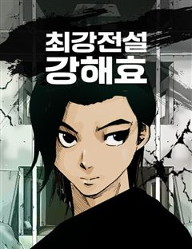
-
14
-
15
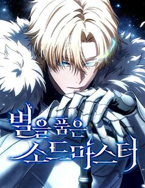
네이버웹툰별을 품은 소드마스터
기사를 동경하는 슬럼가의 부랑아 블라드. 검은 벼락을 맞는 사고 이후부터 들리기 시작한 누군가의 목소리와, 어느 날 갑자기 등장한 푸른 달빛의 기사가 블라드의 세계를 산산조각내면서 뒷골목 소년의 삶이 송두리째 변하기 시작하는데... 높디높은 밤하늘에 있지 않더라도, 아무도 보지 못하는…
시리어스중세판타지액션서양소년물용사네이버웹툰에서 보기 → -
16
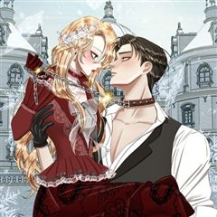
카카오웹툰내가 버린 개에게 물렸을 때
윈터 공작가에선 개를 기른다. 주인에게 늘 순종하는 검은 개를.. 윈터가의 공녀, 이블린 윈터. 자신만을 따르던 개, 길라스 블랙을 잔인하게 내쫓는다. “저를 사랑하신다고 하시지 않았습니까.” “사랑? 그 말을 믿었어? 버러지 같은 게 주제도 모르고..” ”이 순간을 후회하시게 될 겁…
자극적인미스터리로판고자극로맨스카카오웹툰에서 보기 → -
17
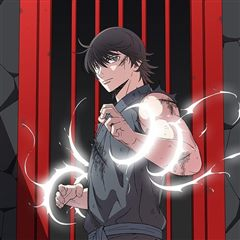
카카오웹툰무장 - 무투전
고려를 지키는 무신이라 불리는 권. 그의 어린 시절부터 이야기는 시작된다. 주인공 권과 그의 형 정은 고려에서 가장 강했던 무인이자 노비였던 만적의 아들들이다. 아버지 만적이 노비 해방 운동을 일으키지만 실패로 끝나고 죽음을 맞자 정과 권은 누군가로부터 계속해서 목숨을 위협받는다. 살…
자극적인복수극액션카카오웹툰에서 보기 → -
18
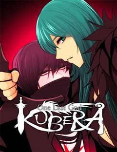
네이버웹툰쿠베라
신의 이름을 가진 소녀 쿠베라 리즈. 15세 생일에 외출에서 돌아오다가 초토화되어버린 마을을 목격하게 되는데..! 신, 수라, 마법사들 사이에서 펼쳐지는 소속불명 장르 혼합 판타지.
다크판타지복수극절망적인신화마법네이버웹툰에서 보기 → -
19
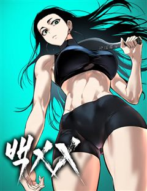
네이버웹툰백XX
정보사(HID) 요원 '백이수'와 범죄 조직의 보스인 쌍둥이 형 '백도경'. 같은 얼굴 다른 삶을 살아온 쌍둥이 형제. 조직에 배신당한 동생은 자신의 신분을 버리고 형이 되기로 한다. 정보사요원, 범죄 조직의 보스가 되다...!
자극적인시리어스복수극가족지금추천작네이버웹툰에서 보기 → -
20
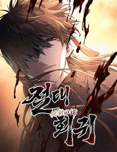
네이버웹툰절대회귀
"나를 과거로 보내주시오." 이 시대에서 그를 죽일 수 없다면, 과거로 돌아가면 되리라. 시간을 거스를 수 있는 '회귀대법(回歸大法)'으로 그토록 원하던 과거로 회귀한 한 남자. 가족도, 친구도, 삶도, 모두 잃었던 '검무극(劍無極)'의 복수를 위한 첫걸음이 시작된다.
복수극참교육미친작화무협/사극고인물네이버웹툰에서 보기 → -
21네이버웹툰
66666년 만에 환생한 흑마법사
강대했던 흑마법사 디아블로 볼피르. 12신의 계략에 당해 억겁 속에 봉인되었지만, 그로부터 66666년이 흘러 다시금 이 땅에 강림한다! "응애!" 웰턴 백작의 갓 태어난 장남으로. 딥다크 매직 판타지 시작!
다크판타지중세판타지액션서양신화마법네이버웹툰에서 보기 → -
22
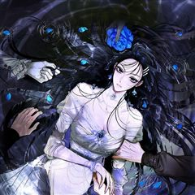
카카오웹툰누군가 내 몸에 빙의했다
본 작품은 가상의 세계관 및 허구의 인물을 다루고 있습니다. 또한 가상의 세계이므로 현대 한국과 풍습/시대상이 다르니 감상에 참고 부탁드립니다. *작품 내 등장하는 한의학 지식은 소설에 맞추어 재구성, 각색되었습니다* -------------------------------------…
고자극드라마서스펜스로판카카오웹툰에서 보기 → -
23
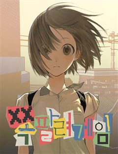
네이버웹툰쪽팔려게임
고등학교 2학년 유사랑은 반에서 묘한 취급을 받는다. 같은 반 친구들의 쪽팔려게임에서 놀이에 껴있지도 않은 유사랑이 자꾸 벌칙의 대상이 된다. 반 친구들도 유사랑의 인격이 어딘가 어긋나 있는 걸 어렴풋이 느끼기 때문이다.
자극적인시리어스고자극드라마우정로맨스네이버웹툰에서 보기 → -
24
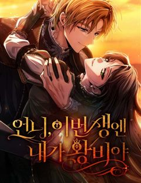
네이버웹툰언니, 이번 생엔 내가 왕비야
약혼자, 언니, 부모. 모든 것으로부터 버려진 그 날, 아리아드네는 15년 전으로 회귀한다. “젠장! 나는 지금 너에게 구애하는 거라고!” 태도가 완전히 달라진 전생의 약혼자부터, “울지 마, 아리아드네. 너는 네가 얼마나 예쁜지 모르지?” 그녀에게 첫눈에 반한 다정한 왕자님까지. 이…
복수극레드아이스 스튜디오사이다서양가족네이버웹툰에서 보기 → -
25
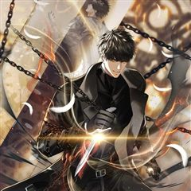
카카오웹툰두 번 사는 랭커
5년 전 사라진 쌍둥이 동생을 잊고 살던 연우. 어느날 그에게 동생의 유품인 회중시계가 돌아왔다. 그리고 그 속에 숨겨진 일기장. '형이 이 일기를 들을 때 즈음이라면 나는 이미 이 세상 사람이 아니겠지.' 여러 차원과 우주가 교차하는 세계에 놓인 태양의 신 탑, 오벨리스크. 그리고…
복수극학원물카카오웹툰에서 보기 → -
26
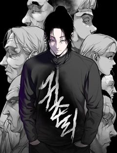
네이버웹툰귀촌리
평범한 시골 마을 '귀촌리'를 찾은 '허무명'. 그는 돌아가신 할머니의 빈 집에 조용히 숨어든다. 그런데 집이 이상하리만큼 깔끔하다. 할머니가 돌아가신 건 3년 전인데? 어쩐지 마을 사람들은 이방인 무명의 방문을 달가워 하는 것 같지 않다. 아니, 실은 경계하는 것 같다. 그리고 그…
자극적인시리어스고자극스릴러피카레스크범죄네이버웹툰에서 보기 → -
27
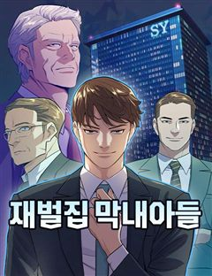
네이버웹툰재벌집 막내아들
[화제의 드라마 원작 웹툰!] 13년 동안의 수고를 배신으로 돌려받다니! 머슴처럼 살다 버려진 순양그룹의 실장, 윤현우. 모든 게 끝났다 싶었을 즘, 순양그룹 진 회장의 손주 진도준으로 깨어난다! 하지만 상속권과는 거리가 먼 재벌집 막내아들 진도준. 과연 그는 가족 정치극에서 최후의…
고자극드라마복수극오피스정치재벌네이버웹툰에서 보기 → -
28
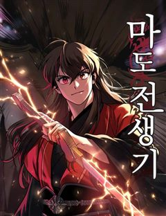
네이버웹툰마도전생기
정파무림 의천맹의 최강 살수, 천하진. 자유를 찾기 위해 탈출을 감행하지만 코앞에서 목숨을 잃고 만다. 그런데… '신교불패, 만마앙복. 삼공자님의 쾌유를 경하드리옵니다!' 무림의 공적, 마교의 삼공자로 전생해버렸다?! 정파무림 최강 비밀병기 천하진의 마도무림 정복기.
악역이주인공전쟁액션지금추천작성장물네이버웹툰에서 보기 → -
29
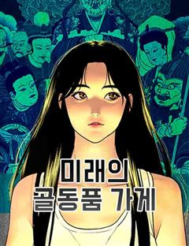
네이버웹툰미래의 골동품 가게
남해의 먼 섬에 살고 있는 소녀, '미래'. 미래의 부모님이 바다에서 돌아오지 못한 그날부터, 모든 것들이 변하기 시작했다. 저주를 풀기 위한 단 한 가지의 방법. 소중한 것들을 지키기 위한 기묘한 소녀의 퇴마가 시작된다.
시리어스오컬트판타지현대동양신화네이버웹툰에서 보기 → -
30
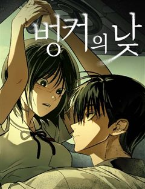
네이버웹툰벙커의 낮
어릴 적 벙커에 데려간 ‘원혁’을 내친 ‘서우’. 이후 고등학생이 된 서우는 고립된 삶에 극단적인 시도를 하던 중, 또 다른 벙커를 발견하고 들어간다. 그러나 피 칠갑인 채 들어온 ‘원혁’에 의해 갇히게 되는데...
자극적인순애남감성적인첫사랑계략남네이버웹툰에서 보기 →